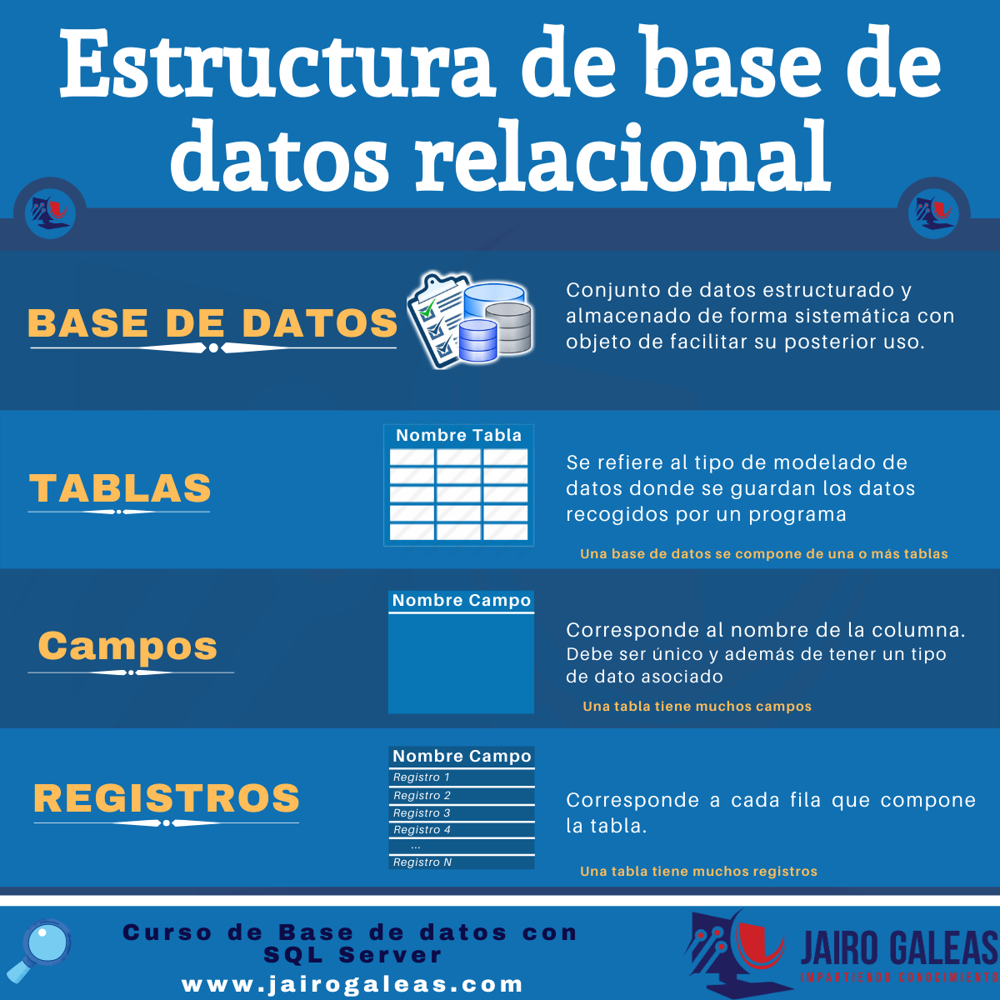

Conceptos básicos de estructuras de bases de datos¶
Las bases de datos relacionales están organizadas de manera jerárquica y estructurada para facilitar el almacenamiento, la consulta y la gestión de grandes volúmenes de información.

Base de Datos (o schema)¶
Es la estructura principal que contiene toda la información organizada. Una base de datos o schema puede almacenar múltiples tablas que están relacionadas entre sí.
- Ejemplo: una base de datos de un instituto puede contener tablas para alumnos, profesores, asignaturas y calificaciones.
graph TD
BD[("INSTITUTO")]
TB1["Alumnado"]
TB2["Profesorado"]
TB3["Asignaturas"]
TB4["Calificaciones"]
BD --> TB1
BD --> TB2
BD --> TB3
BD --> TB4
style BD fill:#e1f5fe,stroke:#01579b,stroke-width:2px
style TB1 fill:#f3e5f5,stroke:#4a148c
style TB2 fill:#e8f5e8,stroke:#1b5e20
style TB3 fill:#fff3e0,stroke:#e65100
style TB4 fill:#ffebee,stroke:#c62828Tabla¶
Representa una entidad específica dentro de la base de datos. Está compuesta por filas y columnas que estructuran la información de manera ordenada. Cada tabla debe tener un nombre único y almacenar datos relacionados con un tema concreto.
Ejemplo: La tabla "Alumnado" contiene información sobre los estudiantes del centro.
| PK_alumno | nombre | apellidos | fecha_nacimiento | curso |
|---|---|---|---|---|
| AL01 | Ana | Pérez García | 2007-03-14 | 2ºBach |
| AL02 | Luis | Martín López | 2006-11-02 | 2ºBach |
| AL03 | Sofía | Rodríguez Díaz | 2007-07-21 | 1ºBach |
| AL04 | Marcos | Fernández Soto | 2006-01-30 | 2ºBach |
La forma de representar esta tabla es: (por ahora fíjate en la columna del medio, las otras ls veremos más adelante)
erDiagram
ALUMNADO {
string PK_alumno PK
string nombre
string apellidos
string email
date fecha_nacimiento
string curso
}
Columna (Campo)¶
Define los atributos o características que describen cada entidad. Cada columna tiene un nombre específico y almacena un tipo particular de información.
- Ejemplo: En la tabla "Alumnos", las columnas podrían ser: ID, Nombre, Apellidos, Fecha_Nacimiento, Ciudad...
| PK_alumno| nombre | apellidos | fecha_nacimiento | curso |
Fila (Registro)¶
Cada fila representa una instancia individual de la entidad almacenada en la tabla. Contiene toda la información específica de un elemento particular.
- Ejemplo: En la tabla "Alumnado", cada fila correspondería a los datos personales de un estudiante. Estos son los datos de Luis:
| AL02 | Luis | Martín López | 2006-11-02 | 2ºBach |
Claves¶
Las claves son columnas (atributos) o conjuntos de columnas que permiten identificar de forma única cada registro en una tabla. Son fundamentales para mantener la integridad y consistencia de los datos.
Clave Primaria (Primary key o PK)¶
Note
Es un campo (o conjunto de campos) que identifica de forma única cada fila de una tabla.
No puede repetirse ni estar vacío, garantizando que cada registro sea distinguible del resto.
- Ejemplo: El campo "PK_alumnado" en la tabla "Alumnos" que contiene un número único para cada estudiante.
| PK_alumnado | nombre | apellidos | fecha_nacimiento | curso |
|---|---|---|---|---|
| AL1 | Ana | Pérez García | 2007-03-14 | 2ºBach |
| AL2 | Luis | Martín López | 2006-11-02 | 2ºBach |
| AL3 | Sofía | Rodríguez Díaz | 2007-07-21 | 1ºBach |
| AL4 | Marcos | Fernández Soto | 2006-01-30 | 2ºBach |
| AL5 | Sofía | Rodríguez Díaz | 2007-07-21 | 1ºBach |
Clave Foránea (Foreign Key o FK)¶
Note
Campo que establece una relación entre dos tablas diferentes. Su valor debe coincidir con una clave primaria de otra tabla, creando vínculos entre las entidades.
Ejemplo: El campo "FK_curso" en la tabla "Alumnos" que hace referencia al "PK_curso" de la tabla "Cursos". Es decir, es una clave foránea que relaciona las dos tablas.
- Tabla: Alumnado
| PK_alummnado | nombre | apellidos | fecha_nacimiento | FK_curso |
|---|---|---|---|---|
| AL01 | Ana | Pérez García | 2007-03-14 | CU06 |
| AL02 | Luis | Martín López | 2006-11-02 | CU06 |
| AL03 | Sofía | Rodríguez Díaz | 2007-07-21 | CU05 |
| AL04 | Marcos | Fernández Soto | 2006-01-30 | CU06 |
- Tabla: Cursos
| PK_curso | Curso | Situación |
|---|---|---|
| CU01 | 1ºESO | Zona A |
| CU02 | 2ºESO | Zona A |
| CU03 | 3ºESO | Zona A |
| CU04 | 4ºESO | Zona B |
| CU05 | 1ºBAC | Zona B |
| CU06 | 2ºBAC | Zona B |
¿En qué curso está Marcos Fernández Soto?
¿En qué zona del instituto puedo encontara a Sofía?
Relaciones entre tablas¶
Estos conceptos trabajan de forma conjunta para crear una estructura coherente:
- Una base de datos contiene múltiples tablas
- Cada tabla está formada por filas y columnas
- Las claves primarias aseguran la unicidad de cada fila
- Las claves foráneas conectan diferentes tablas entre sí
Esta organización permite mantener la integridad de los datos, evitar redundancias y facilitar las consultas complejas que involucren información de múltiples tablas.
Veamos un ejemplo:
erDiagram
JUGADOR ||--o{ EQUIPO : juega_en
CIUDAD ||--o{ EQUIPO : sede_de
JUGADOR {
string id_jugador PK
string nombre
string apellidos
string posicion
int edad
string id_equipo FK
}
EQUIPO {
string id_equipo PK
string nombre
string estadio
int año_fundacion
string id_ciudad FK
}
CIUDAD {
string id_ciudad PK
string nombre
string pais
}🔗 Resumen de Relaciones - Ejemplo Jugadores
EQUIPO - JUGADOR
- 1 equipo → N jugadores (juega_en)
CIUDAD - EQUIPO
- 1 ciudad → N equipos (sede_de)
📋 Claves Foráneas en JUGADOR
- id_equipo → Equipo al que pertenece
📋 Claves Foráneas en EQUIPO
- id_ciudad → Ciudad donde juega
Cada jugador tiene: 1 equipo
Cada equipo tiene: 1 ciudad
erDiagram
PARADA ||--o{ VIAJE : "parada_salida"
PARADA ||--o{ VIAJE : "parada_llegada"
AUTOBUS ||--o{ VIAJE : "realiza"
PARADA {
string id_parada PK
string nombre
string localidad
strinfg dirección
}
AUTOBUS {
string matricula PK
string marca
string modelo
int capacidad
}
VIAJE {
string numero_viaje PK
string matricula_autobus FK
string parada_salida FK
string parada_llegada FK
datetime fecha_hora_salida
datetime fecha_hora_llegada
boolean estado
}🔗 Resumen de Relaciones
PARADA - VIAJE - 1 parada → N viajes de salida - 1 parada → N viajes de llegada
AUTOBUS - VIAJE - * autobús → N viajes realizados
📋 Claves Foráneas en VIAJE
- parada_salida → Parada de inicio
- parada_llegada → Parada de destino
- matricula_autobus → Autobús asignado
Cada viaje tiene: 1 salida + 1 llegada + 1 autobús
erDiagram
AEROPUERTO ||--o{ VUELO : "vuelos_salida"
AEROPUERTO ||--o{ VUELO : "vuelos_llegada"
AVION ||--o{ VUELO : "opera"
AEROPUERTO {
string codigo_iata PK
string nombre
string ciudad
string pais
string altura
}
AVION {
string matricula PK
string modelo
string marca
int capacidad
}
VUELO {
string numero_vuelo PK
string matricula_avion FK
string aeropuerto_salida FK
string aeropuerto_llegada FK
datetime fecha_hora_salida
datetime fecha_hora_llegada
string estado
}🔗 Explicación de las Relaciones
1. AEROPUERTO → VUELO (vuelos_salida) - Significado: Un aeropuerto puede ser el origen de muchos vuelos - Ejemplo: El aeropuerto MAD (Madrid) puede tener vuelos de salida a BCN, AGP, LIS, etc.
2. AEROPUERTO → VUELO (vuelos_llegada) - Significado: Un aeropuerto puede ser el destino de muchos vuelos - Ejemplo: El aeropuerto BCN (Barcelona) puede recibir vuelos desde MAD, AGP, VLC, etc.
3. AVION → VUELO (opera) - Significado: Un avión puede realizar muchos vuelos a lo largo del tiempo - Ejemplo: El avión EC-ABC puede operar el vuelo IB1234 hoy y el IB5678 mañana
📋 Resumen de relaciones
| Tabla | Relación | Tabla | Significado |
|---|---|---|---|
| AEROPUERTO | 1:N | VUELO | 1 aeropuerto → Varios vuelos de salida |
| AEROPUERTO | 1:N | VUELO | 1 aeropuerto → Varios vuelos de llegada |
| AVION | 1:N | VUELO | 1 avión → Varios vuelos operados |